Auf einen Blick
Du brauchst nichts anzulegen und nichts zu planen – das macht die Leitung. Deine Aufgabe ist es, deine Aufgaben im Blick zu behalten und Bescheid zu geben, wenn du anfängst und wenn du fertig bist. Alles, was du antippst, sieht die Leitung sofort.
Erste Schritte
Anmelden
Deinen Namen und dein Passwort bekommst du von der Leitung.

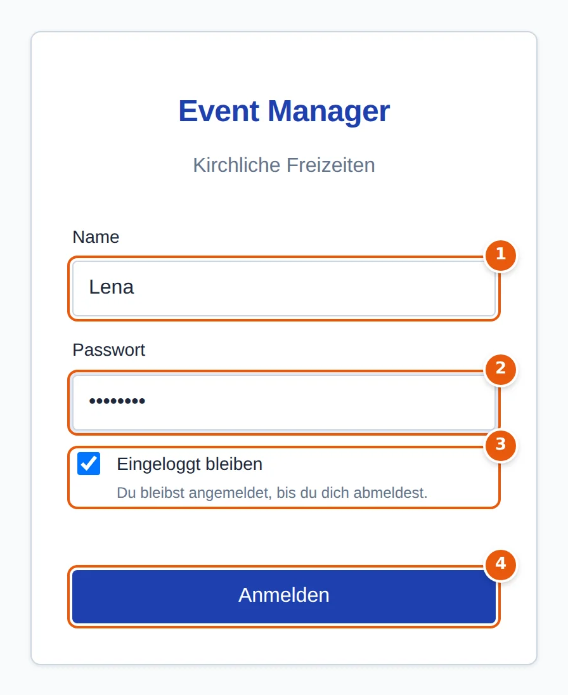
- Name – so, wie die Leitung ihn angelegt hat, meist Vor- und Nachname. Groß- und Kleinschreibung spielt keine Rolle.
- Passwort – hier kommt es auf jeden Buchstaben an. Ändern kannst du es nach dem Anmelden über Passwort ändern.
- Eingeloggt bleiben – auf deinem eigenen Handy angehakt lassen, dann musst du dich nicht jedes Mal neu anmelden. Auf einem fremden oder gemeinsam genutzten Gerät abhaken: dann gilt die Anmeldung nur, solange die App offen ist.
- Anmelden.
Die App aufs Handy holen
Der Event Manager läuft im Browser. Leg ihn dir als App auf den Startbildschirm – dann öffnet er sich mit einem Tipp, und auf dem iPhone funktionieren nur so die Benachrichtigungen.
| Handy | So geht's |
|---|---|
| Android (Chrome) | Seite öffnen → Menü ⋮ → App installieren bzw. Zum Startbildschirm hinzufügen |
| iPhone (Safari) | Seite öffnen → Teilen (Quadrat mit Pfeil) → Zum Home-Bildschirm. Danach die App immer über das neue Symbol öffnen, nicht über Safari. |
Benachrichtigungen einschalten
Damit du erinnert wirst, musst du auf jedem Gerät einmal erlauben, dass die App dir Benachrichtigungen schickt. Solange das fehlt, steht oben ein blauer Hinweis mit Benachrichtigungen aktivieren. Tippe darauf und bestätige die Frage des Browsers mit Zulassen.
Prüfen kannst du es unter Einstellungen → Test-Nachricht senden. Kommt die Nachricht an, ist alles richtig eingerichtet. Wie du Benachrichtigungen zusätzlich per Signal bekommst, steht unter Einstellungen.
Meine Aufgaben
Nach dem Anmelden siehst du alle deine Aufgaben – aus laufenden und kommenden Freizeiten und noch einen Monat nach deren Ende. Dazu kommen die öffentlichen Aufgaben der Freizeiten, für die du eingeplant bist.

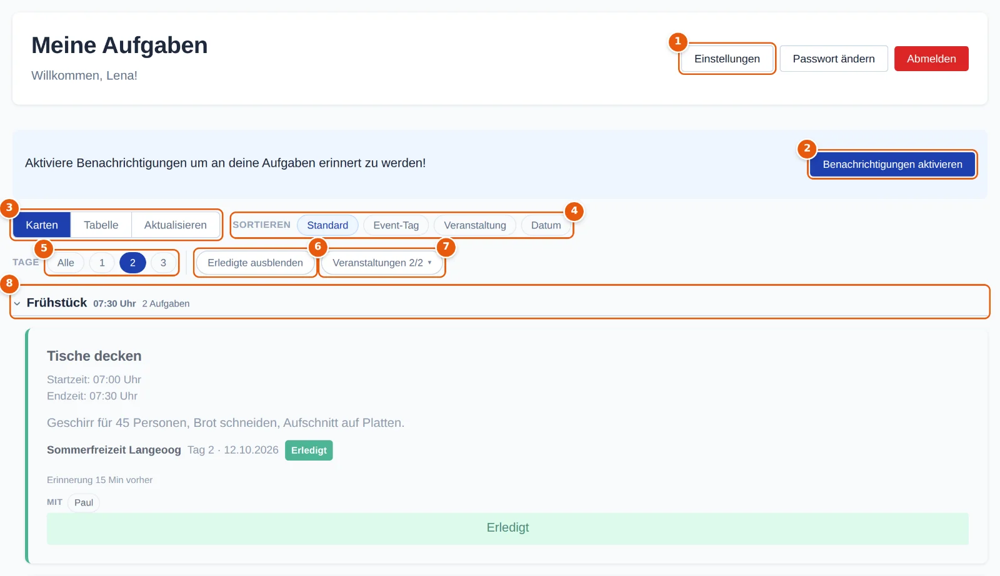
- Einstellungen, Passwort ändern, Abmelden – am Handy hinter ☰ oben rechts.
- Benachrichtigungen aktivieren – erscheint, solange auf diesem Gerät noch keine Erlaubnis erteilt ist.
- Karten oder Tabelle als Ansicht; Aktualisieren holt den neuesten Stand. Meist ist das nicht nötig – Änderungen der Leitung erscheinen von selbst.
- Sortieren – Standard (nach Uhrzeit), nach Event-Tag, Veranstaltung oder Datum.
- Tage – nur die Aufgaben eines Tages der Freizeit, oder Alle. Läuft gerade eine Freizeit, ist der heutige Tag schon ausgewählt.
- Erledigte ausblenden – räumt die Liste auf, damit nur übrig bleibt, was noch zu tun ist.
- Veranstaltungen – bist du auf mehreren Freizeiten eingeteilt, blendest du hier einzelne aus. Die Zahl zeigt, wie viele gerade sichtbar sind.
- Aufgabengruppe – eine Überschrift über zusammengehörenden Aufgaben, etwa „Frühstück“. Ein Tipp darauf klappt die Gruppe zu oder auf.
Am Handy sieht dieselbe Seite so aus:

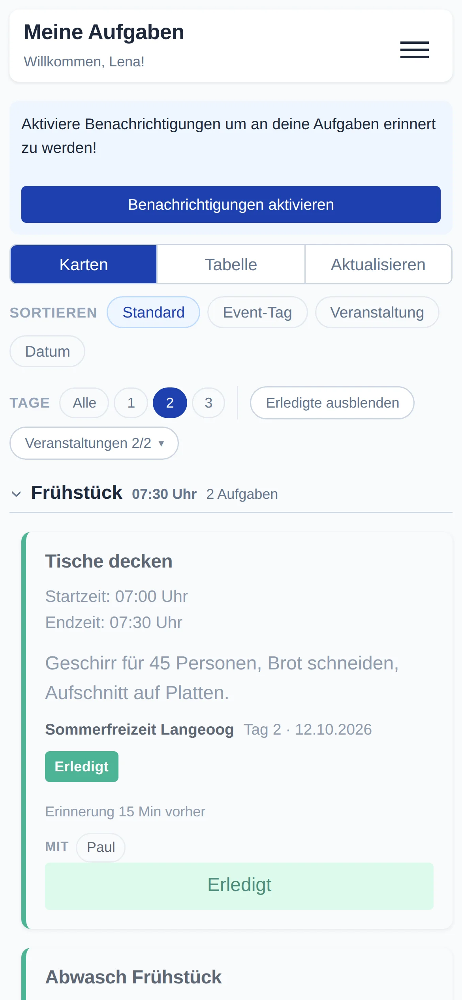
Eine Aufgabe im Detail
Jede Aufgabe steht auf einer eigenen Karte. Das ist alles, was du über sie wissen musst:

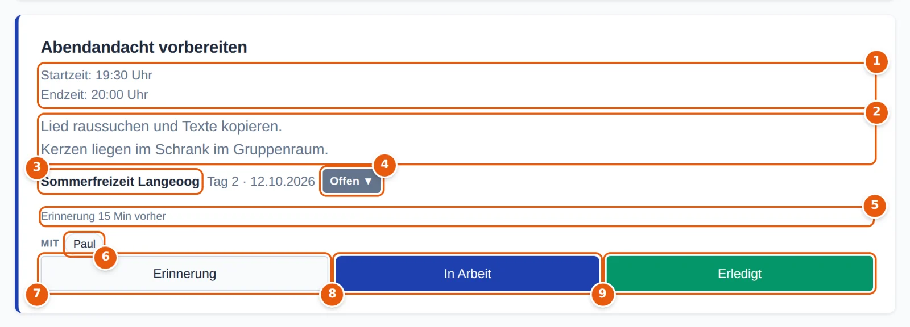
- Zeiten – Startzeit und Endzeit; manche Aufgaben haben stattdessen eine geplante Zeit, manche gar keine.
- Beschreibung – was genau zu tun ist. Lange Beschreibungen klappst du mit mehr auf.
- Veranstaltung, dahinter der Tag der Freizeit und das Datum.
- Status – Offen, In Arbeit, Erledigt oder Überfällig. Ein Tipp darauf öffnet ein kleines Menü (siehe unten).
- Erinnerung – wann du erinnert wirst.
- Mit – wer diese Aufgabe noch hat. Fehlt die Zeile, machst du sie allein.
- Erinnerung – deine Erinnerung für diese Aufgabe einstellen (siehe Erinnerungen).
- In Arbeit – du fängst gerade an.
- Erledigt – fertig.
Farben und öffentliche Aufgaben
Der farbige Streifen links zeigt auf einen Blick, wie es um eine Aufgabe steht:

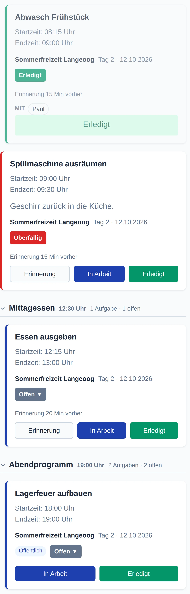
- grün: erledigt
- rot: überfällig – die Endzeit ist vorbei
- blau: offen oder in Arbeit
Öffentlich heißt: Die Aufgabe ist niemandem fest zugeteilt, sondern jede und jeder aus dem Team darf sie übernehmen – etwa „Lagerfeuer aufbauen“. Wer sie erledigt, hakt sie für alle ab. Weil du nicht fest eingeteilt bist, gibt es an öffentlichen Aufgaben keine eigene Erinnerung.
In Arbeit und Erledigt
- In Arbeit tippst du, wenn du anfängst. Die Leitung sieht dann, dass sich jemand kümmert.
- Erledigt tippst du, wenn du fertig bist. Die Karte wird grün, und die Aufgabe ist für alle erledigt, die sie haben – deine Mitstreiter müssen nicht noch einmal abhaken.
- Überfällig setzt die App von selbst, wenn die Endzeit vorbei ist und die Aufgabe noch nicht erledigt ist. Du kannst sie trotzdem noch abhaken.
Aus Versehen auf In Arbeit getippt? Ein Tipp auf den Status öffnet ein kleines Menü, mit dem du zwischen Offen und In Arbeit wechselst:

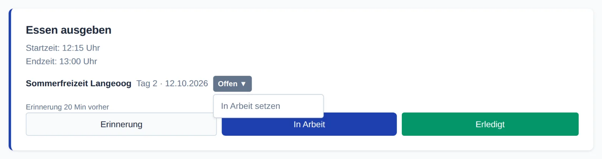
Erledigt kannst du nicht selbst zurücknehmen. Hast du aus Versehen abgehakt, sag der Leitung Bescheid – sie setzt die Aufgabe zurück.
Manche Aufgaben erledigen sich von selbst zu ihrer Zeit, etwa „Nachtruhe“. Dort musst du nichts antippen.
Erinnerungen
Hat eine Aufgabe eine Uhrzeit, wirst du kurz vorher erinnert – so viele Minuten, wie in deinen Einstellungen steht (anfangs 15). Hat die Leitung an einer Aufgabe eine eigene Zeit festgelegt, etwa 30 Minuten fürs Einkaufen oder gar keine Erinnerung für die Nachtruhe, gilt ihre. Was gerade gilt, steht auf der Karte (Erinnerung 15 Min vorher).
Eigene Erinnerung stellen
Mit Erinnerung an der Karte stellst du für dich persönlich ein, wann du erinnert wirst. Die Leitung sieht das nicht, und es gilt nur für dich.

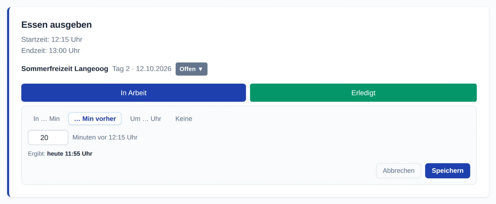
| Art | Beispiel | Gut zu wissen |
|---|---|---|
| In … Min | in 20 Minuten | einmalig, ab jetzt gerechnet – geht auch bei Aufgaben ohne Uhrzeit |
| … Min vorher | 20 Minuten vor 12:15 | nur bei Aufgaben mit Uhrzeit |
| Um … Uhr | morgen um 07:45 | einmalig, Tag und Uhrzeit frei wählbar |
| Keine | – | für diese Aufgabe gar keine Erinnerung |
Unter dem Feld steht, was herauskommt (Ergibt: heute 11:55 Uhr). Mit Speichern übernehmen. Während eine Aufgabe In Arbeit ist, verschwindet der Knopf – du bist ja schon dabei.
In der Benachrichtigung
- Ein Tipp auf die Benachrichtigung öffnet die App.
- In 30 Min / In 60 Min erinnern dich später noch einmal, ohne dass du die App öffnen musst. Auf dem iPhone fehlen diese Knöpfe – dort stellst du eine neue Erinnerung in der App.
- Warst du länger ohne Netz, kommen alte Erinnerungen nicht gesammelt nach – eine Erinnerung an etwas längst Vergangenes hilft niemandem.
Außerdem kann die App dir Bescheid geben, wenn die Leitung den Status einer deiner Aufgaben ändert.
Tabelle
Mit Tabelle siehst du alle Aufgaben kompakt untereinander – praktisch am Computer oder wenn du viele Aufgaben hast.

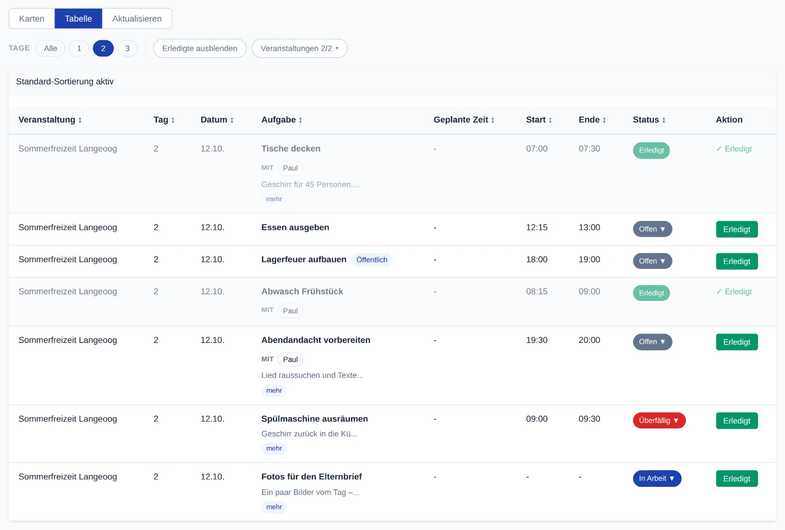
- Ein Klick auf eine Spaltenüberschrift sortiert danach, ein zweiter dreht die Reihenfolge um.
- mehr zeigt die ganze Beschreibung.
- Status und Erledigt funktionieren wie auf den Karten. Eine eigene Erinnerung stellst du in der Kartenansicht.
Welche Ansicht beim Öffnen kommt, legst du in den Einstellungen fest.
Ohne Netz
Auf Freizeiten ist der Empfang oft schlecht. Die App kommt damit zurecht: Du siehst deine Aufgaben weiter, und was du antippst, wird nachgeschickt, sobald wieder Netz da ist.

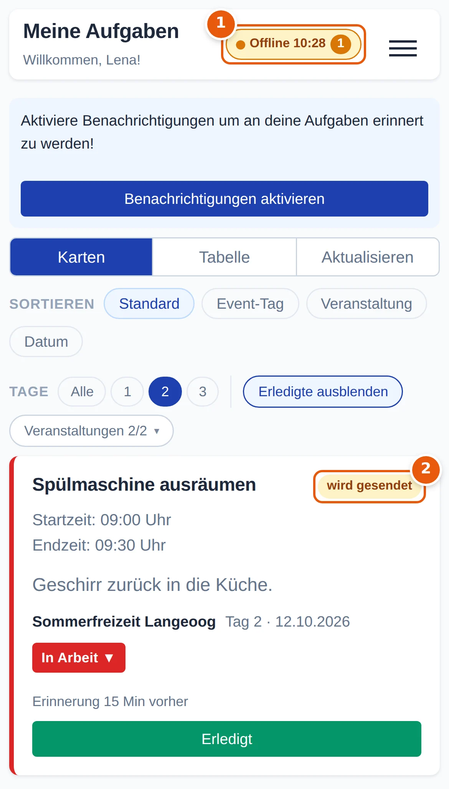
- Offline mit der Uhrzeit, von der die Daten stammen (am Computer: Offline · Stand 10:28). Die Zahl daneben sagt, wie viele Änderungen noch warten.
- wird gesendet – diese Änderung ist bei dir schon zu sehen, aber noch nicht bei der Leitung. Du musst nichts tun; sie geht von selbst raus.
Hat in der Zwischenzeit jemand anderes dieselbe Aufgabe geändert, gilt die jüngere Änderung. Wurde die Aufgabe inzwischen gelöscht oder dir abgenommen, verfällt deine Änderung still.
Einstellungen
Am Handy erreichst du alles Persönliche über ☰ oben rechts, am Computer über die Knöpfe oben rechts.

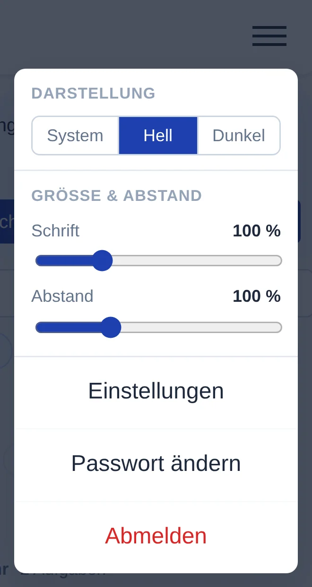
- Darstellung – System folgt dem Handy, Hell und Dunkel legen es fest.
- Größe & Abstand – Schrift und Abstände größer oder kleiner. Gilt nur für dieses Gerät.
- Einstellungen, Passwort ändern, Abmelden.

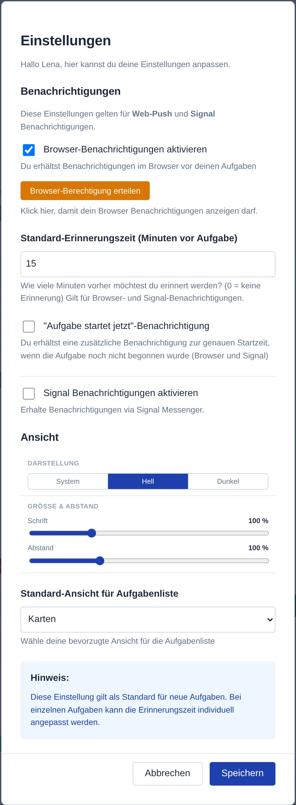
| Einstellung | Was sie bewirkt |
|---|---|
| Browser-Benachrichtigungen | Erinnerungen als Benachrichtigung aufs Gerät. Fehlt die Erlaubnis, erscheint Browser-Berechtigung erteilen; ist sie da, prüft Test-Nachricht senden, ob alles ankommt. |
| Standard-Erinnerungszeit | wie viele Minuten vorher du erinnert wirst, wenn die Leitung an der Aufgabe keine eigene Zeit festgelegt hat. 0 = keine Erinnerung. Gilt für Aufgaben, die du ab jetzt bekommst; bei schon eingeteilten stellst du sie über Erinnerung an der Aufgabe um. |
| „Aufgabe startet jetzt“ | eine zweite Benachrichtigung genau zur Startzeit, falls du noch nicht auf In Arbeit getippt hast |
| Signal Benachrichtigungen | dieselben Benachrichtigungen zusätzlich per Signal. Trag deine Handynummer mit Ländervorwahl ein (+49 …). Die Nachrichten kommen von der Signal-Nummer der Leitung. |
| Ansicht | Darstellung und Größe wie im Menü |
| Standard-Ansicht | ob deine Aufgaben als Karten oder als Tabelle aufgehen |
Mit Speichern übernehmen. Auf einem fremden oder geliehenen Handy meldest du dich nach Gebrauch über Abmelden ab – dann bekommt das Gerät auch keine Benachrichtigungen mehr für dich.
Wenn etwas nicht klappt
Ich bekomme keine Erinnerungen
- Einstellungen → Test-Nachricht senden. Kommt sie nicht an, fehlt die Erlaubnis: Browser-Berechtigung erteilen tippen.
- Hast du früher einmal Blockieren gewählt, kann die App nicht mehr fragen. Dann im Browser die Einstellungen der Seite öffnen (Schloss neben der Adresse) → Benachrichtigungen → Zulassen.
- iPhone: Benachrichtigungen gibt es nur, wenn die App über Zum Home-Bildschirm installiert ist und von dort geöffnet wird (ab iOS 16.4).
- Android: Bei manchen Herstellern (Samsung, Xiaomi, Huawei) den Browser vom Energiesparen ausnehmen, sonst kommen Benachrichtigungen verspätet.
- Steht an der Aufgabe Erinnerung gar nicht oder „keine“, hat sie keine Uhrzeit oder die Erinnerung ist aus – stell dir eine eigene.
Eine Aufgabe fehlt
- Ist ein einzelner Tag ausgewählt? Tippe bei Tage auf Alle.
- Ist Erledigte ausblenden an, oder sind bei Veranstaltungen welche ausgeblendet?
- Ist die Gruppe zugeklappt? Ein Tipp auf die Gruppenüberschrift klappt sie auf.
- Hilft nichts, tippe Aktualisieren. Fehlt sie dann noch, hat die Leitung dich (noch) nicht eingeteilt.
Anmelden klappt nicht
Prüfe den Namen – genau so, wie die Leitung ihn angelegt hat, meist mit Nachnamen. Passwort vergessen? Die Leitung kann es dir neu setzen.
Aus Versehen „Erledigt“ getippt
Sag der Leitung Bescheid; sie setzt die Aufgabe zurück.
Spickzettel
Die häufigsten Handgriffe auf einen Blick.
| Ich will … | So geht's |
|---|---|
| sehen, was ich heute machen muss | Meine Aufgaben – der heutige Tag ist vorausgewählt |
| nur noch Offenes sehen | Erledigte ausblenden |
| alle Tage sehen | Tage → Alle |
| sagen, dass ich anfange | In Arbeit an der Aufgabe |
| eine Aufgabe abhaken | Erledigt an der Aufgabe |
| „In Arbeit“ zurücknehmen | Tipp auf den Status → Offen |
| „Erledigt“ zurücknehmen | der Leitung Bescheid sagen |
| wissen, mit wem ich die Aufgabe mache | Zeile Mit auf der Karte |
| später erinnert werden | Erinnerung an der Aufgabe → In … Min |
| früher erinnert werden | Erinnerung → … Min vorher |
| generell früher erinnert werden | Einstellungen → Standard-Erinnerungszeit |
| Benachrichtigungen auf diesem Gerät | Hinweis oben → Benachrichtigungen aktivieren |
| prüfen, ob Benachrichtigungen ankommen | Einstellungen → Test-Nachricht senden |
| Benachrichtigungen per Signal | Einstellungen → Signal → Handynummer (+49 …) |
| alles kompakt sehen | Tabelle |
| größere Schrift | ☰ → Größe & Abstand (am Computer: Einstellungen → Ansicht) |
| dunkle Darstellung | ☰ → Darstellung → Dunkel |
| mein Passwort ändern | Passwort ändern (am Handy unter ☰) |
| mich auf einem fremden Handy abmelden | Abmelden (am Handy unter ☰) |
Farben
- blauer Rand: offen oder in Arbeit
- roter Rand: überfällig
- grüner Rand: erledigt
- „wird gesendet“: wartet auf Netz
Event Manager · Anleitung für Mitarbeiter · Zur App